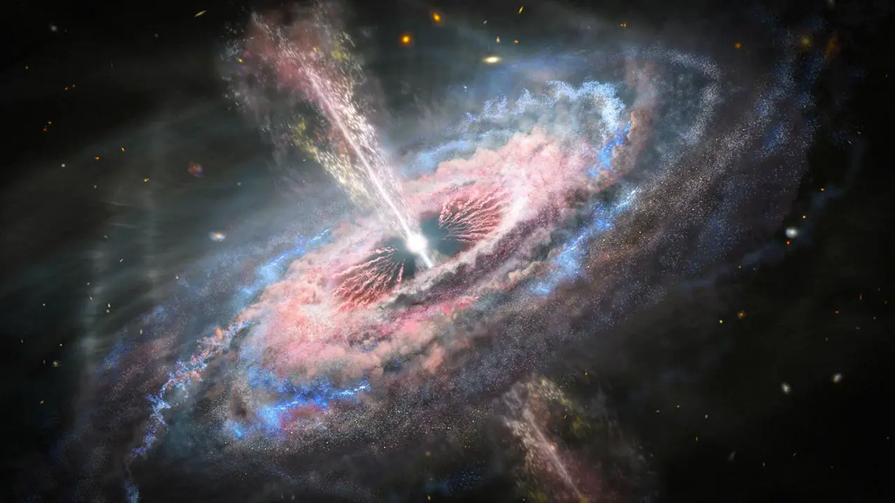
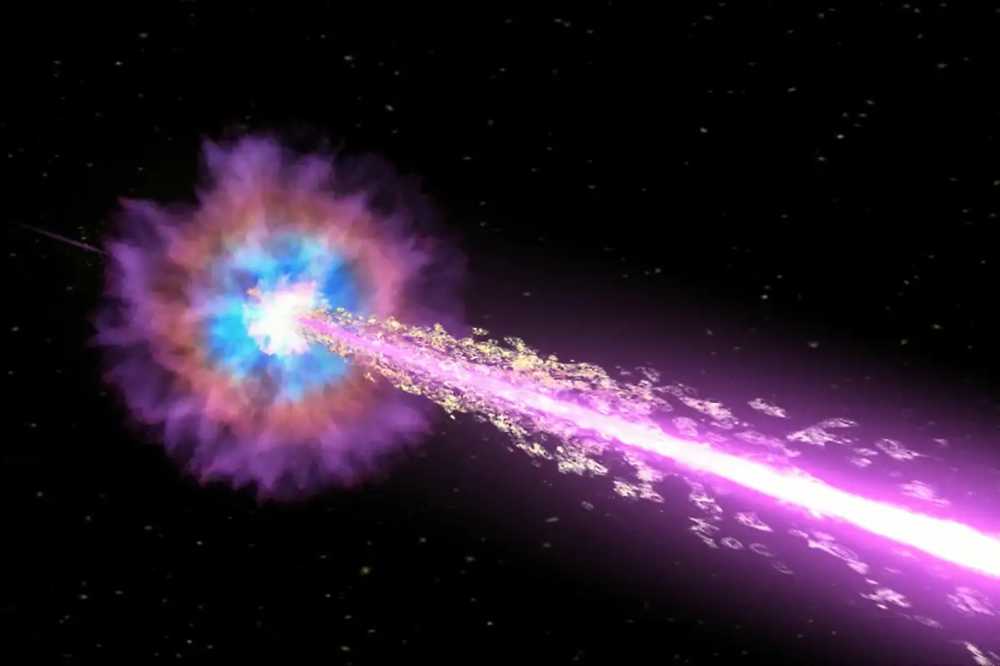
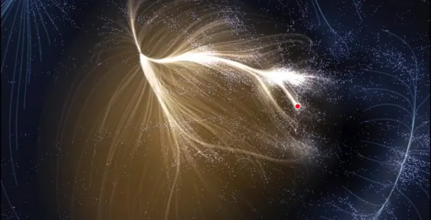

Space Phenomena
Embark on a Cosmic Journey of Discovery

The Boötes Void
The Boötes Void is a nearly spherical region of space that contains very few galaxies. It's often referred to as a cosmic void.

Quasars
Quasars are incredibly bright and energetic centers of distant galaxies. They outshine entire galaxies and are powered by supermassive black holes.

Gamma-Ray Bursts
Gamma-ray bursts are intense bursts of gamma-ray radiation that can last from milliseconds to several minutes. Their exact cause is still a subject of research.

The Great Attractor
The Great Attractor is a mysterious gravitational anomaly in intergalactic space that is pulling our galaxy and millions of others towards it.